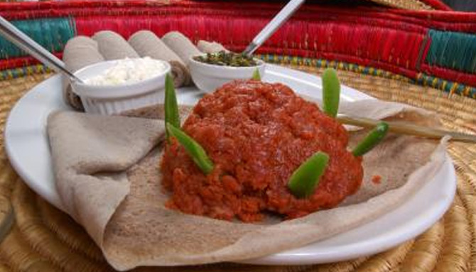

Ethiopain Tradtional Foods/Shiro wote

Shiro Wate: The national dish for most Ethiopians is ingera, a flat, sour dough pancake made from a cereal grain that is unique known as Teff. Though t'eff is unique to Ethiopia it is diverse in color and habitat. Teff is a member of the grass genus Eragrostis or lovegrass. T'eff will grow in many areas it is not an easy crop to farm. One problem in particular is that the weight of the grain bends the stem to the ground.
Ingredients
- Shiro powder
- Chooped onion
- Garlik
- Tomato
- Paper Powder
- Oil
- Salt
Steps to prepare
- Grind Neccessary Spices
- Melt the fresh better with spices
- Prepare the Leanest meet and cut with nife in small pices
- Mix the meeet with the spices and butters
- Put it on feeding pots